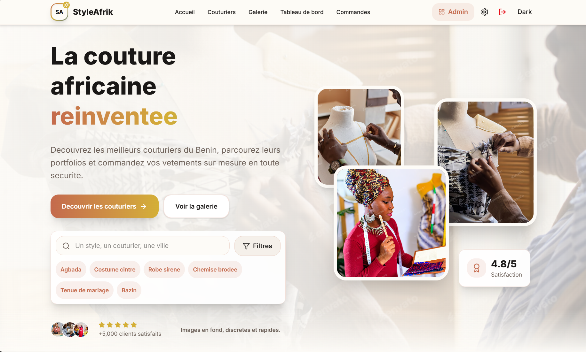
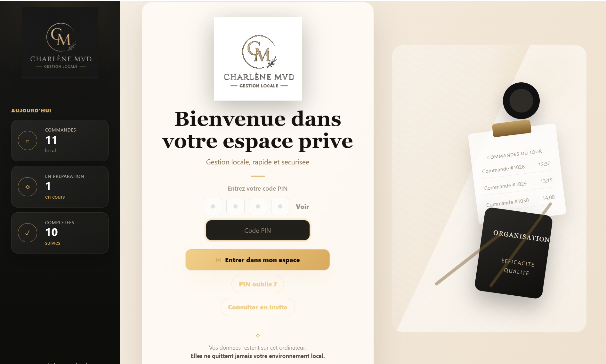

Développeur Web, Intégrateur IA et Entrepreneur Tech, je conçois des sites, applications et outils numériques utiles à partir de besoins réels. Mon parcours en systèmes informatiques nourrit une vision simple : créer des solutions concrètes pour accompagner l'innovation africaine.
À propos
Je suis titulaire d'une Licence en Systèmes Informatiques et Logiciels,
avec un parcours orienté vers le développement web, l'analyse des
besoins et la conception de solutions numériques.
J'ai soutenu un mémoire portant sur une plateforme numérique destinée
aux stylistes, une expérience qui m'a permis de travailler sur un
problème métier concret : organiser la relation entre professionnels,
clients, commandes et suivi des prestations.
Aujourd'hui, je développe mes compétences en React, PHP, Laravel et
intégration d'outils d'intelligence artificielle. À travers Warinx
Technologie, mon projet entrepreneurial en cours, je souhaite contribuer
à la transformation numérique en Afrique avec des solutions utiles,
accessibles et bien pensées.
Création de sites et d'applications web avec une approche claire, structurée et évolutive.
Utilisation d'outils comme ChatGPT, Claude et Codex pour améliorer les workflows et la productivité.
Compréhension des besoins, modélisation UML et conception de solutions adaptées au contexte réel.
Construction progressive de Warinx Technologie avec une vision tournée vers l'impact numérique local.
Compétences
Un socle orienté développement web, analyse des besoins et intégration progressive de l'intelligence artificielle dans des solutions concrètes.
Création d'interfaces web modernes, composants réutilisables et expériences utilisateur dynamiques.
Développement de fonctionnalités côté serveur, formulaires, logique métier et traitement de données.
Framework en progression pour structurer des applications web plus solides et maintenables.
Utilisation de ChatGPT, Claude et Codex pour accélérer l'analyse, la rédaction et le développement.
Modélisation des besoins, cas d'utilisation et processus avant le développement d'une solution.
Services
Des prestations alignées avec mon profil : développement web, amélioration d'outils existants et intégration simple de l'IA dans des usages professionnels.
Projets
Trois initiatives qui illustrent ma manière de travailler : partir d'un problème concret, comprendre le métier, puis construire une solution numérique claire et exploitable.

Plateforme numérique conçue autour des besoins des stylistes : présentation des créations, gestion des demandes clients, suivi des commandes et organisation du parcours entre le client et le professionnel.
Projet entrepreneurial en cours orienté vers la création de solutions numériques, l'intégration d'outils IA et l'accompagnement progressif des porteurs d'idées dans leur transformation digitale.

Application desktop développée pour une pâtisserie béninoise afin de centraliser la gestion des commandes, des paiements, des statistiques de vente et du suivi des livraisons, avec une approche centrée sur les opérations quotidiennes.
Parcours & Initiatives
Des expériences qui complètent mon profil technique et montrent ma capacité à comprendre les environnements professionnels, les opérations et les besoins réels des utilisateurs.
Immersion professionnelle autour des systèmes d'information, du support informatique et du diagnostic d'incidents. Cette expérience m'a permis de mieux comprendre le fonctionnement d'une organisation, les contraintes techniques internes et l'importance d'un service informatique fiable.
Participation au développement d'une activité locale dans le domaine de la pâtisserie à travers la réflexion stratégique, l'organisation des opérations et l'amélioration de la présence numérique.
Contact
Présentez-moi votre projet, votre problème métier ou votre site existant. Je vous répondrai avec une approche claire et adaptée à votre contexte.